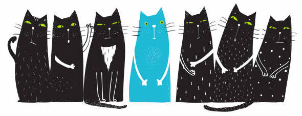

Popular Cat Breeds
Domestic Shorthair
American Shorthair
Domestic Longhair

Maine Coon
Siamese
Russian Blue
Ragdoll
Bengal
Persian
Help You Become the Best Cat Owner Ever
1. Choose a good veterinarian and cat sitter
One of the first things you’ll have to do is find a great veterinarian for your cat, preferably nearby. Ask your cat-owning friends for their local vet recommendations or check vet directory sites like BringFido. During your cat’s first check-up, be sure to ask if your vet notices anything about your cat’s health that you should be aware of. Use Rover to line up a local, loving pet sitter to watch your kitty while you’re away. You can also find an experienced cat sitter to do quick drop-in visits with your new pet, which is especially helpful when you work long hours.
2. Get your cat’s room ready
The best way to help your new cat adjust nicely to your home is for him to get settled into a designated spot. This room or enclosed area should contain his litter box, bed, food, and toys. Cats typically need time to warm up to new people and environments so having a space set aside for your new feline family member is important, especially if you have other pets or children in your household.
3. Remember: it’s okay if your cat hides from you
It’s normal for a cat to hide under the bed and disappear for long periods of time. If this is the case, sit by your cat and wait for him to approach you. If he doesn’t, try again later. Make sure to leave food and water out for your cat, and if it seems like he’s not eating for a few days, contact your veterinarian for advice.
4. Socialize with your cat often
A lot of people think that cats are antisocial, but that doesn’t mean that they don’t need playtime. Hang out with your cat every day, and let him get used to different social situations and environments.
Reasons Why Your Cat Might Attack You
1. Cats attack because it’s their nature
Cats have evolved to be superior stalkers. Before their days as coddled creatures in our homes, cats relied on their pouncing skills to both feed and defend themselves.
2. Cats attack because it’s fun
Cats love to play and attacking is usually just another form of this. Attack play is most common in younger cats who will attack pretty much anything: you, kitten friends, plants, toys, toilet paper rolls, shoes, shadows…you get the idea.
3. Your cat could be defending itself
A cat who is scared may attack simply as a defense against a perceived threat. Make sure your kitty has plenty of “safe spaces” within her domain to hide in or retreat to.
4. Cat attacks can be caused by poor socialization
Cats that are not properly socialized to humans and other cats as they grow up can attack simply because they don’t know anything different than defending themselves against the unknown. This isn’t something that goes away so it is very important to ensure kittens and young cats receive as much socialization as possible. Ideally, this includes with people as well as other animals.
5. Cats can attack because they are bored
Veterinarian Crowell-Davis tells VetStreet, “You need to look at whether your cat has adequate opportunities for acceptable types of play and realize that just bringing home a fabric mouse stuffed with catnip isn’t going to cut it.” It’s good to keep a wide variety of toys on hand for your feline friend to stave off boredom and keep her active. If you work a lot consider getting another kitty with a similar energy level for your cat to play with or even hire a Rover sitter to stop by and and provide some focused playtime.